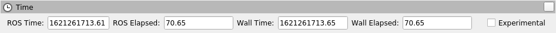

ROS 2GalacticGeochelone (代号'galactic'; 2021年5月) [待校准@4649]
目录
Galactic Geochelone is the seventh release of ROS 2. What follows is highlights of the important changes and features in Galactic Geochelone since the last release. For a list of all of the changes since Foxy, see the long form changelog.
支持的平台 [待校准@1387]
主要在以下平台上支持GalacticGeochelone: [待校准@4651]
一级平台: [待校准@4161]
Ubuntu 20.04 (焦点):
amd64和arm64[待校准@4506]Windows 10 (Visual Studio 2019):
amd64[待校准@4652]
2级平台: [待校准@4162]
RHEL 8:
amd64[待校准@4653]
3级平台: [待校准@4243]
Ubuntu 20.04 (焦点):
arm32[待校准@4507]Debian Bullseye (11):
amd64、arm64和arm32[待校准@4654]开放式重击 (2.6) /网络操作系统:
arm32和arm64[待校准@4655]苹果电脑10.14 (莫哈韦):
amd64[待校准@4656]
有关RMW实现、编译器/解释器版本和系统依赖版本的更多信息，请参见 REP 2000 。 [待校准@4431]
此ROS 2版本中的新功能 [待校准@4096]
能够指定每个日志记录器的日志级别 [待校准@4658]
现在可以在命令行上为不同的日志记录器指定不同的日志级别: [待校准@4659]
ros2 run demo_nodes_cpp talker --ros-args --log-level WARN --log-level talker:=DEBUG
上述命令设置全局日志级别WARN，但将talker节点消息的日志级别设置为DEBUG。 --log-level 命令行选项可以通过任意次数来为每个日志记录器设置不同的日志级别。 [待校准@4660]
能够通过环境变量配置日志目录 [待校准@4661]
现在可以通过两个环境变量配置日志目录: ROS_LOG_DIR 和 ROS_HOME 。逻辑如下: [待校准@4662]
如果
ROS_LOG_DIR设置为非空，则使用 “$ ROS_LOG_DIR”。 [待校准@4663]否则，使用 “$ ROS_HOME/log”，如果未设置或为空，则使用“ ~/.Ros'” 表示
ROS_HOME。 [待校准@4664]
因此，默认值保持不变: ''~/.ros/log''。 [待校准@4665]
相关PRs: ros2/rcl_logging#53 and ros2/launch#460 。 [待校准@4666]
例如: [待校准@4488]
ROS_LOG_DIR=/tmp/foo ros2 run demo_nodes_cpp talker
将所有原木放置在 /tmp/foo 中。 [待校准@4667]
ROS_HOME=/path/to/home ros2 run demo_nodes_cpp talker
将所有原木放置在 /path/to/home/log 中。 [待校准@4668]
能够在CMake之外调用 rosidl 管道 [待校准@4669]
现在，在CMake之外调用 rosidl 接口生成管道非常简单。源代码生成器和接口定义转换器可通过统一的命令行界面访问。 [待校准@4670]
例如，给定 Demo 消息一些 demo 包: [待校准@4671]
mkdir -p demo/msg
cd demo
cat << EOF > msg/Demo.msg
std_msgs/Header header
geometry_msgs/Twist twist
geometry_msgs/Accel accel
EOF
生成C、C++ 和Python支持源文件非常容易: [待校准@4672]
rosidl generate -o gen -t c -t cpp -t py -I$(ros2 pkg prefix --share std_msgs)/.. \
-I$(ros2 pkg prefix --share geometry_msgs)/.. demo msg/Demo.msg
生成的源文件将放在 gen 目录中。 [待校准@4673]
还可以将消息定义转换为其他格式，以供第三方代码生成工具使用: [待校准@4674]
rosidl translate -o gen --to idl -I$(ros2 pkg prefix --share std_msgs)/.. \
-I$(ros2 pkg prefix --share geometry_msgs)/.. demo msg/Demo.msg
翻译后的消息定义将放在 gen 目录中。 [待校准@4675]
请注意，这些工具会生成源文件，但不会构建它 -- 这一责任仍在调用er上。这是在CMake以外的构建系统中启用 rosidl 接口生成的第一步。更多参考和后续步骤见 design document 。 [待校准@4676]
在启动时外部配置QoS [待校准@4677]
现在可以在启动时为节点外部配置QoS设置。QoS设置在运行时不可配置; 它们仅在启动时可配置。节点作者必须选择加入，以便在启动时启用更改QoS设置。如果在节点上启用了该功能，则可以在节点首次启动时使用ROS参数设置QoS设置。 [待校准@4678]
Demos in C++ and Python can be found here.
见 design document for more details 。 [待校准@4680]
注意，使用注册的调用处理参数更改的用户代码应避免拒绝未知参数的更新。在Galactic之前，这被认为是不好的做法，但是在启用外部可配置的QoS的情况下，它将导致硬故障。 [待校准@4681]
相关PRs: ros2/rclcpp#1408 and ros2/rclpy#635 [待校准@4682]
Python point_cloud2实用程序可用 [待校准@4683]
在Python中与 PointCloud2 messages 交互的几个实用程序是 ported to ROS 2 。这些实用程序允许从PointCloud2消息 ( read_points 和 read_points_list ) 中获取点列表，并从点列表 ( create_cloud 和 create_cloud_xyz32 ) 中创建PointCloud2消息。 [待校准@4684]
创建PointCloud 2消息，然后回读的示例: [待校准@4685]
import sensor_msgs_py.point_cloud2
from std_msgs.msg import Header
pointlist = [[0.0, 0.1, 0.2]]
pointcloud = sensor_msgs_py.point_cloud2.create_cloud_xyz32(Header(frame_id='frame'), pointlist)
for point in sensor_msgs_py.point_cloud2.read_points(pointcloud):
print(point)
RViz2时间面板 [待校准@4686]
显示当前壁和ROS时间以及经过的壁和ROS时间的Rviz2时间面板已经是 ported to RViz2 。要启用时间面板，请单击面板-> 添加新面板，然后选择 "Time" 。将出现如下所示的面板: [待校准@4687]
ros2话题echo可以打印序列化数据 [待校准@4688]
在调试中间件问题时，查看RMW发送的原始序列化数据可能会很有用。 --raw command-line flag 被添加到 ros2 topic echo 中以显示该数据。要在动作中看到这一点，请运行以下命令。 [待校准@4689]
1号航站楼: [待校准@4690]
$ ros2 topic pub /chatter std_msgs/msg/String "data: 'hello'"
2号航站楼: [待校准@4691]
$ ros2 topic echo --raw /chatter
b'\x00\x01\x00\x00\x06\x00\x00\x00hello\x00\x00\x00'
---
获取消息的YAML表示 [待校准@4692]
现在可以使用 to_yaml 函数获得C++ 中所有消息的YAML表示。打印出YAML表示形式的代码示例: [待校准@4693]
#include <cstdio>
#include <std_msgs/msg/string.hpp>
int main()
{
std_msgs::msg::String msg;
msg.data = "hello world";
printf("%s", rosidl_generator_traits::to_yaml(msg).c_str());
return 0;
}
能够在运行时通过ros2命令加载参数文件 [待校准@4694]
ROS 2长期以来一直能够在启动时指定参数值 (通过命令行参数或YAML文件)，并将当前参数转储到文件中 (通过 ros2 param dump )。Galactic使用 ros2 param load 动词从YAML文件中增加了 load parameter values at runtime 的能力。例如: [待校准@4695]
1号航站楼: [待校准@4690]
$ ros2 run demo_nodes_cpp parameter_blackboard
2号航站楼: [待校准@4691]
$ ros2 param set /parameter_blackboard foo bar # sets 'foo' parameter to value 'bar'
$ ros2 param dump /parameter_blackboard # dumps current value of parameters to ./parameter_blackboard.yaml
$ ros2 param set /parameter_blackboard foo different # sets 'foo' parameter to value 'different'
$ ros2 param load /parameter_blackboard ./parameter_blackboard.yaml # reloads previous state of parameters, 'foo' is back to 'bar'
检查QoS不兼容性的工具 [待校准@4696]
基于新的QoS兼容性检查api， ros2doctor 和 rqt_graph 现在可以检测和报告发布者和订阅之间的QoS不兼容性。 [待校准@4697]
给予出版商并订阅 incompatible QoS settings: [待校准@4698]
1号航站楼: [待校准@4690]
$ ros2 run demo_nodes_py talker_qos -n 1000 # i.e. best_effort publisher
2号航站楼: [待校准@4691]
$ ros2 run demo_nodes_py listener_qos --reliable -n 1000 # i.e. reliable subscription
ros2doctor reports: [待校准@4699]
$ ros2 doctor --report
# ...
QOS COMPATIBILITY LIST
topic [type] : /chatter [std_msgs/msg/String]
publisher node : talker_qos
subscriber node : listener_qos
compatibility status : ERROR: Best effort publisher and reliable subscription;
# ...
而 rqt_graph 显示: [待校准@4700]
相关PRs: ros2/ros2cli#621, ros-visualization/rqt_graph#61 [待校准@4701]
在参数文件中使用launch替换 [待校准@4702]
就像ROS 1 roslaunch 中的 rosparam 标签一样， launch_ros 现在可以在参数文件中评估替换。 [待校准@4703]
例如，给出一些如下所示的 parameter_file_with_substitutions.yaml : [待校准@4704]
/**:
ros__parameters:
launch_date: $(command date)
将 allow_substs 设置为 True ，以获得根据 Node launch评估的替代品: [待校准@4705]
import launch
import launch_ros.parameter_descriptions
import launch_ros.actions
def generate_launch_description():
return launch.LaunchDescription([
launch_ros.actions.Node(
package='demo_nodes_cpp',
executable='parameter_blackboard',
parameters=[
launch_ros.parameter_descriptions.ParameterFile(
param_file='parameter_file_with_substitutions.yaml',
allow_substs=True)
]
)
])
XMLlaunch文件也支持这一点。 [待校准@4706]
<launch>
<node pkg="demo_nodes_cpp" exec="parameter_blackboard">
<param from="parameter_file_with_substitutions.yaml" allow_substs="true"/>
</node>
</launch>
支持独特的网络流量 [待校准@4708]
应用程序现在可能需要UDP/TCP和基于IP的RMW实现来提供唯一的 * 网络流 * (即唯一的 Differentiated Services Code Points and/or unique IPv6 Flow Labels 和/或IP数据包报头中的唯一端口) 用于发布者和订阅，在支持此类功能 (如5g网络) 的网络架构中为这些IP流启用QoS规范。 [待校准@4709]
要在动作中看到这一点，您可以运行这些c examples示例 (可在 ros2/examples 仓库中找到): [待校准@4710]
1号航站楼: [待校准@4690]
ros2 run examples_rclcpp_minimal_publisher publisher_member_function_with_unique_network_flow_endpoints
2号航站楼: [待校准@4691]
ros2 run examples_rclcpp_minimal_subscriber subscriber_member_function_with_unique_network_flow_endpoints
Rosbag2新功能 [待校准@4712]
按时间分割记录 [待校准@4713]
在Foxy中，你只能根据袋子的大小来分割袋子，现在你也可以根据经过的时间来分割。以下命令将bagfile拆分为100秒块。 [待校准@4714]
ros2 bag record --all --max-bag-duration 100
ros2包列表 [待校准@4715]
这个新命令列出了rosbag2使用的各种类型的已安装插件。 [待校准@4716]
$ ros2 bag list storage
rosbag2_v2
sqlite3
$ ros2 bag list converter
rosbag_v2_converter
压缩实现是一个插件 [待校准@4717]
在Foxy中，rosbag2压缩是用Zstd库实现硬编码的。这已经被重新设计，以便压缩实现是一个插件，并且可以在不修改核心rosbag2代码库的情况下被替换掉。 ros-galactic-rosbag2 附带的默认插件仍然是Zstd插件 -- 但是现在更多的插件可以发布和使用，并且通过有选择地安装包Zstd可以从安装中排除。 [待校准@4718]
按消息压缩 [待校准@4719]
在Foxy中，您可以在拆分时自动调用y压缩每个rosbag文件 (每个文件压缩)，但是现在您也可以指定每个消息压缩。 [待校准@4720]
ros2 bag record --all --compression-format zstd --compression-mode message
Rosbag2 Python API [待校准@4721]
[需手动修复的语法]Galactic年发布了一个新的包 rosbag2_py ，它提供了一个Python API。此包是围绕c API API的 pybind11 绑定。从最初的[需手动修复的语法]Galactic版本开始，它还没有公开通过 rosbag2_cpp API可用的所有功能，但它是 ros2 bag CLI工具的唯一连接，所以大量的功能是可用的。 [待校准@4722]
性能测试包和性能改进 [待校准@4723]
自Foxy发布以来，对rosbag2进行了全面的性能分析项目。充分初次报告提供https://github.com/ros2/rosbag2/blob/主/rosbag2_performance/rosbag2_performance_benchmarking/docs/rosbag2_performance_improvements.pdf。 rosbag2_performance_benchmarking 包提供了运行性能分析的工具，尤其是在记录方面，这有助于我们维护和提高rosbag2的性能。 [待校准@4724]
追踪这份报告，完成了关键工作，确实将性能提高到实际机器人工作流程更有用的状态。突出关键度量高带宽压力测试 (200Mbps)，Foxy释放下降70% 的邮件，而Galactic版本大约100% 保留。有关更多详细信息，请参阅链接的报告。 [待校准@4725]
用于话题选择的``--regex`` and --exclude options [待校准@4726]
新的录制选项 --regex 和 --exclude 允许微调袋子中录制的话题，而不必明确列出所有话题。这些选项可以一起或单独使用，并与 --all 联合使用 [待校准@4727]
以下命令将仅记录名称中带有 "scan" 的话题。 [待校准@4728]
ros2 bag record --regex "*scan*"
以下命令将记录除 /my_namespace/ 以外的所有话题 [待校准@4729]
ros2 bag record --all --exclude "/my_namespace/*"
ros2 bag reindex [待校准@4730]
ROS 2包由目录而不是单个文件表示。此目录包含一个 metadata.yaml 文件和一个或多个bag文件。当 metadata.yaml 文件丢失或丢失时，“ros2 bag reindex $ bag_dir” 将尝试通过读取目录中的所有bag文件来重建它。 [待校准@4731]
播放时间控制 [待校准@4732]
为rosbag2播放添加了新控件-暂停和恢复、变化率和播放-下一步。从Galactic版本开始，这些控件仅作为rosbag2播放器节点上的服务公开。在 ros2 bag play 中，也在开发使其暴露于键盘控制的过程中，但是在那之前，带有按钮或键盘控制的用户应用程序可能会被简单地实现以调用这些服务。 [待校准@4733]
# In one shell
$ ros2 bag play my_bag
# In another shell
$ ros2 service list -t
/rosbag2_player/get_rate [rosbag2_interfaces/srv/GetRate]
/rosbag2_player/is_paused [rosbag2_interfaces/srv/IsPaused]
/rosbag2_player/pause [rosbag2_interfaces/srv/Pause]
/rosbag2_player/play_next [rosbag2_interfaces/srv/PlayNext]
/rosbag2_player/resume [rosbag2_interfaces/srv/Resume]
/rosbag2_player/set_rate [rosbag2_interfaces/srv/SetRate]
/rosbag2_player/toggle_paused [rosbag2_interfaces/srv/TogglePaused]
# Check if playback is paused
$ ros2 service call /rosbag2_player/is_paused rosbag2_interfaces/IsPaused
# Pause playback
$ ros2 service call /rosbag2_player/pause rosbag2_interfaces/Pause
# Resume playback
$ ros2 service call /rosbag2_player/resume rosbag2_interfaces/Resume
# Change the paused state of playback to its opposite. If playing, pauses. If paused, resumes.
$ ros2 service call /rosbag2_player/toggle_paused rosbag2_interfaces/TogglePaused
# Get the current playback rate
$ ros2 service call /rosbag2_player/get_rate
# Set the current playback rate (must be > 0)
$ ros2 service call /rosbag2_player/set_rate rosbag2_interfaces/SetRate "rate: 0.1"
# Play a single next message (only works while paused)
$ ros2 service call /rosbag2_player/play_next rosbag2_interfaces/PlayNext
回放发布/时钟 [待校准@4734]
Rosbag2也可以通过在回放期间发布到 /clock 话题来口述 "simulation time" 。以下命令将定期发布时钟消息。 [待校准@4735]
# Publish at default rate - 40Hz
ros2 bag play my_bag --clock
# Publish at specific rate - 100Hz
ros2 bag play my_bag --clock 100
自Foxy发布以来的变化 [待校准@4736]
默认RMW更改为EclipseCycloneDDS [待校准@4737]
在Galactic开发版本过程，ROS技术指导委员会 voted 更改默认ROS中间件 (RMW) Eclipse Cyclone DDS project of Eclipse Foundation 。在不进行任何配置更改的情况下，默认情况下，用户将获得EclipseCycloneDDS。Fast DDS和Connext仍然是一级受支持的RMW供应商，用户可以通过使用 RMW_IMPLEMENTATION 环境变量自行决定选择使用这些RMWs中的一个。有关更多信息，请参见 Working with multiple RMW implementations guide 。 [待校准@4738]
Connext RMW更改为rmw_connextdds [待校准@4739]
一个新的RMW为Connext调用 rmw_connextdds 被合并为Galactic。这个RMW有更好的性能，并且解决了老RMW rmw_connext_cpp 的许多问题。 [待校准@4740]
测试和整体质量的大型改进 [待校准@4741]
[需手动修复的语法]Galactic包含许多修复竞争条件、插头内存泄漏和修复用户报告的问题的变化。除了这些变化，在[需手动修复的语法]Galactic开发版本期间，通过实施 REP 2004 来提高系统的整体质量。 rclcpp 包及其所有依赖项 (包括大多数ROS 2非Python核心包) 通过以下方式升级到 Quality Level 1 : [待校准@4742]
有版本策略 (QL1要求1) [待校准@4743]
有文档化的变更控制流程 (QL1要求2) [待校准@4744]
记录所有功能和公共api (QL1要求3) [待校准@4745]
增加许多附加测试 (QL1要求4): [待校准@4746]
所有功能的系统测试 [待校准@4747]
所有公共api的单元测试 [待校准@4748]
夜间性能测试 [待校准@4749]
代码覆盖率为95% [待校准@4750]
包的所有运行时依赖至少与包一样高 (QL1要求5) [待校准@4751]
支持所有REP-2000平台 (QL1要求6) [待校准@4752]
有漏洞披露策略 (QL1要求7) [待校准@4753]
rmw [待校准@4376]
用于检查QoS配置文件兼容性的新API [待校准@4754]
[需手动修复的语法]``rmw_qos_profile_check_compatible`` is用于检查两个QoS配置文件的兼容性的新功能。 [待校准@4755]
RMW供应商应在诸如 rqt_graph 这样的工具中实施该API以实现QoS调试和自省功能，以使其正常工作。 [待校准@4756]
相关公关: ros2/rmw#299 [待校准@4757]
[需手动修复的语法]ament _ cmake [待校准@4280]
ament_install_python_package() now安装蟒蛇蛋 [待校准@4758]
通过安装一个扁平的蟒蛇蛋，使用 ament_install_python_package() 安装的蟒蛇包可以通过使用 pkg_resources 和 importlib.metadata 等模块被发现。此外，可以在 setup.cfg 文件中提供额外的元数据 (包括入口点)。 [待校准@4759]
ament_target_dependencies() handles系统依赖性 [待校准@4761]
现在可以将某些包依赖项标记为系统依赖项，以帮助处理外部代码中的警告。典型调用y，系统依赖关系也被排除在依赖关系计算之外 -- 小心使用它们。 [待校准@4762]
tf2_ros Python从tf2_ros中分离出来 [待校准@4766]
以前存在于tf2_ros中的Python代码已移动到其自己的名为tf2_ros_py的包中。任何依赖于tf2_ros的现有Python代码都将继续工作，但是这些包的package.xml应在tf2_ros_py上修改为 exec_depend 。 [待校准@4767]
tf2_ros Python转换侦听器使用全局命名空间 [待校准@4768]
Python TransformListener 现在在全局命名空间中订阅 /tf 和 /tf_static 。以前，它存在于节点的命名空间中。这意味着节点的命名空间将不再影响 /tf 和 /tf_static 订阅。 [待校准@4769]
例如: [待校准@4488]
ros2 run tf2_ros tf2_echo --ros-args -r __ns:=/test -- odom base_link
将订阅 /tf 和 /tf_static ，正如 ros2 topic list 所展示的。 [待校准@4770]
相关公关: ros2/geometry2#390 [待校准@4771]
rclcpp [待校准@4284]
更改spin_until_future_complete模板参数 [待校准@4772]
“Executor::spin_until_future _ complete `` was the future result type 乙甲, and the method only accepted a std::shared_future<ResultT> ” 的第一个模板参数。为了接受其他类型的期货 (例如: “std::future')，该参数已更改为未来类型本身。 [待校准@4773]
在 spin_until_future_complete 调用依赖于模板参数演绎的地方，不需要更改。如果不是，这是一个差异示例: [待校准@4774]
std::shared_future<MyResultT> future;
...
-executor.spin_until_future_complete<MyResultT>(future);
+executor.spin_until_future_complete<std::shared_future<MyResultT>>(future);
更多细节见 ros2/rclcpp#1160 。有关用户代码中所需更改的示例，请参见 ros-visualization/interactive_markers#72 。 [待校准@4775]
更改默认 /clock 订阅QoS配置文件 [待校准@4776]
默认值从历史深度为10的可靠通讯更改为历史深度为1的最佳通讯。见 ros2/rclcpp#1312 。 [待校准@4777]
Waable API [待校准@4778]
Waable API被修改以避免 MultiThreadedExecutor 问题。这仅影响实现自定义waable的用户。详情见 ros2/rclcpp#1241 。 [待校准@4779]
[需手动修复的语法] rclcpp 日志宏中的变化 [待校准@4780]
以前，日志宏易受 format string attack 的攻击，在string格式被评估，并可能执行代码、读取堆栈或在运行程序中导致分段错误。为了解决这个安全问题，日志宏现在只接受string文本作为它的格式string参数。 [待校准@4781]
如果您以前有以下代码: [待校准@4782]
const char *my_const_char_string format = "Foo";
RCLCPP_DEBUG(get_logger(), my_const_char_string);
您现在应该将其替换为: [待校准@4783]
const char *my_const_char_string format = "Foo";
RCLCPP_DEBUG(get_logger(), "%s", my_const_char_string);
或者: [待校准@4784]
RCLCPP_DEBUG(get_logger(), "Foo");
此更改消除了日志宏中的一些便利，因为 “std::string” 不再被接受为format参数。 [待校准@4785]
如果您以前没有格式参数的代码，如: [待校准@4786]
std::string my_std_string = "Foo";
RCLCPP_DEBUG(get_logger(), my_std_string);
您现在应该将其替换为: [待校准@4783]
std::string my_std_string = "Foo";
RCLCPP_DEBUG(get_logger(), "%s", my_std_string.c_str());
备注
如果你使用 ''std: string ”作为格式string格式参数，转换，string到 char * 和使用格式string将产量格式安全警告。这是因为编译器无法编译到 “std::string” 来验证参数。为了避免安全警告，我们建议您手动构建string，并在没有格式参数的情况下传递它，如前面的示例所示。 [待校准@4787]
[需手动修复的语法]``std::stringstream`` types仍然被接受为流日志宏的参数。详情见 ros2/rclcpp#1442 。 [待校准@4788]
参数类型现在默认为静态 [待校准@4789]
以前，可以在设置参数时更改参数的类型。例如，如果一个参数被声明为整数，稍后调用设置该参数可能会将该类型更改为string。这种行为可能导致错误，并且很少是用户想要的。默认情况下，从Galactic开始，参数类型是静态的，尝试更改类型将失败。如果需要先前的动态行为，则有一种机制可以选择它 (请参阅下面的代码)。 [待校准@4790]
// declare integer parameter with default value, trying to set it to a different type will fail.
node->declare_parameter("my_int", 5);
// declare string parameter with no default and mandatory user provided override.
// i.e. the user must pass a parameter file setting it or a command line rule -p <param_name>:=<value>
node->declare_parameter("string_mandatory_override", rclcpp::PARAMETER_STRING);
// Conditionally declare a floating point parameter with a mandatory override.
// Useful when the parameter is only needed depending on other conditions and no default is reasonable.
if (mode == "modeA") {
node->declare_parameter("conditionally_declare_double_parameter", rclcpp::PARAMETER_DOUBLE);
}
// You can also get the old dynamic typing behavior if you want:
rcl_interfaces::msg::ParameterDescriptor descriptor;
descriptor.dynamic_typing = true;
node->declare_parameter("dynamically_typed_param", rclcpp::ParameterValue{}, descriptor);
详见https://github.com/ros2/rclcpp/blob/主/rclcpp/doc/notes_on _ stati调用y_typed_parameters.md。 [待校准@4791]
用于检查QoS配置文件兼容性的新API [待校准@4754]
[需手动修复的语法]``qos_check_compatible`` is用于检查两个QoS配置文件的兼容性的新功能。 [待校准@4792]
相关公关: ros2/rclcpp#1554 [待校准@4793]
rclpy [待校准@4331]
删除已弃用的节点。set_parameters _ 调用back [待校准@4794]
方法 Node.set_parameters_callback 是 deprecated in ROS Foxy and has been removed in ROS Galactic 。用 Node.add_on_set_parameters_callback() 代替。下面是一些使用它的示例代码。 [待校准@4795]
import rclpy
import rclpy.node
from rcl_interfaces.msg import ParameterType
from rcl_interfaces.msg import SetParametersResult
rclpy.init()
node = rclpy.node.Node('callback_example')
node.declare_parameter('my_param', 'initial value')
def on_parameter_event(parameter_list):
for parameter in parameter_list:
node.get_logger().info(f'Got {parameter.name}={parameter.value}')
return SetParametersResult(successful=True)
node.add_on_set_parameters_callback(on_parameter_event)
rclpy.spin(node)
运行此命令以查看在动作中调用的参数。 [待校准@4796]
ros2 param set /callback_example my_param "Hello World"
参数类型现在默认为静态 [待校准@4789]
在Foxy及更早版本中，调用设置参数可能会改变其类型。从Galactic乙开始，参数类型是静态的，默认情况下不能更改。如果需要先前的行为，则在参数描述符中将 dynamic_typing 设置为true。这里有一个例子。 [待校准@4797]
import rclpy
import rclpy.node
from rcl_interfaces.msg import ParameterDescriptor
rclpy.init()
node = rclpy.node.Node('static_param_example')
node.declare_parameter('static_param', 'initial value')
node.declare_parameter('dynamic_param', 'initial value', descriptor=ParameterDescriptor(dynamic_typing=True))
rclpy.spin(node)
运行这些命令以查看stati调用y和dynami调用y类型参数的不同之处。 [待校准@4798]
$ ros2 param set /static_param_example dynamic_param 42
Set parameter successful
$ ros2 param set /static_param_example static_param 42
Setting parameter failed: Wrong parameter type, expected 'Type.STRING' got 'Type.INTEGER'
详见https://github.com/ros2/rclcpp/blob/主/rclcpp/doc/notes_on _ stati调用y_typed_parameters.md。 [待校准@4791]
用于检查QoS配置文件兼容性的新API [待校准@4754]
[需手动修复的语法]``rclpy.qos.qos_check_compatible`` is a new function 用于检查两个QoS配置文件的兼容性。如果配置文件兼容，则使用它们的发布者和订阅者将能够相互交流。 [待校准@4799]
import rclpy.qos
publisher_profile = rclpy.qos.qos_profile_sensor_data
subscription_profile = rclpy.qos.qos_profile_parameter_events
print(rclpy.qos.qos_check_compatible(publisher_profile, subscription_profile))
$ python3 qos_check_compatible_example.py
(QoSCompatibility.ERROR, 'ERROR: Best effort publisher and reliable subscription;')
rclcpp _ 动作 [待校准@4575]
[需手动修复的语法]Action客户目标响应调用回签名已更改 [待校准@4800]
现在，目标响应调用应该采用指向目标句柄的共享指针，而不是未来。 [待校准@4801]
对于 example ，旧签名: [待校准@4802]
void goal_response_callback(std::shared_future<GoalHandleFibonacci::SharedPtr> future)
新签名: [待校准@4803]
void goal_response_callback(GoalHandleFibonacci::SharedPtr goal_handle)
相关公关: ros2/rclcpp#1311 [待校准@4804]
Rosidl_typesupport_intrspection_c [待校准@4805]
从数组获取元素的API中断函数 [待校准@4806]
该函数的签名已更改，因为它的semanti调用y不同于用于从数组或序列获取元素的所有其他函数。这仅影响使用自省类型支持实现的rmw的作者。 [待校准@4807]
更多细节见 ros2/rosidl#531 。 [待校准@4808]
Rcl _ 生命周期和rclcpp_生命周期 [待校准@4809]
RCL的生命周期状态机获取新的初始化API [待校准@4810]
对rcl_lifetime中的生命周期状态机进行了修改，以期望新引入的选项结构，并结合了状态机的常规配置。选项结构允许指示状态机是否应使用默认值初始化，其附加服务是否处于活动状态以及使用哪个分配器。 [待校准@4811]
rcl_ret_t
rcl_lifecycle_state_machine_init(
rcl_lifecycle_state_machine_t * state_machine,
rcl_node_t * node_handle,
const rosidl_message_type_support_t * ts_pub_notify,
const rosidl_service_type_support_t * ts_srv_change_state,
const rosidl_service_type_support_t * ts_srv_get_state,
const rosidl_service_type_support_t * ts_srv_get_available_states,
const rosidl_service_type_support_t * ts_srv_get_available_transitions,
const rosidl_service_type_support_t * ts_srv_get_transition_graph,
const rcl_lifecycle_state_machine_options_t * state_machine_options);
RCL的生命周期状态机存储分配器实例 [待校准@4812]
选项结构 (上文讨论) 需要分配器的实例用于初始化状态机。此选项结构和所体现的分配器存储在生命周期状态机中。作为一个直接的结果， rcl_lifecycle_fini function 不再在其fini函数中期望分配器，而是使用options结构中的分配器集来解除其内部数据结构的分配。 [待校准@4813]
rcl_ret_t
rcl_lifecycle_state_machine_fini(
rcl_lifecycle_state_machine_t * state_machine,
rcl_node_t * node_handle);
RCLCPP的生命周期节点公开选项以不实例化服务 [待校准@4814]
为了使用rclcpp的生命周期节点而不暴露其内部服务，如 change_state 、 get_state 等。al.，生命周期节点的构造函数具有一个新引入的参数，指示服务是否可用。默认情况下，此boolean标志设置为true，如果不需要，不需要对现有API进行任何更改。 [待校准@4815]
explicit LifecycleNode(
const std::string & node_name,
const rclcpp::NodeOptions & options = rclcpp::NodeOptions(),
bool enable_communication_interface = true);
相关PRs: ros2/rcl#882 and ros2/rclcpp#1507 [待校准@4816]
Rcl _ 生命周期和rclcpp_生命周期 [待校准@4809]
记录-按时间分割 [待校准@4817]
已知问题 [待校准@4127]
ros2cli [待校准@4476]
守护程序降低了Windows上的CLI [待校准@4818]
作为一种变通方法，可以在没有守护程序的情况下使用CLI命令，例如: [待校准@4819]
ros2 topic list --no-daemon
问题由 ros2/ros2cli#637 追踪。 [待校准@4820]
rqt [待校准@4821]
一些rqt_bag图标丢失 [待校准@4822]
[需手动修复的语法] "Zoom In" 、 "Zoom Out" 、 "Zoom Home" 和 "Toggle Thumbnails" 的图标在 rqt_bag 中丢失。这个问题在 ros-visualization/rqt_bag#102 中被追踪 [待校准@4823]
大多数rqt实用程序不能在Windows上独立运行 [待校准@4824]
[需手动修复的语法]Launch的rqt工具 "standalone" Windows (像 ros2 run rqt_graph rqt_graph ) 一般不工作。解决方法是launchrqt容器进程 ( rqt )，然后插入要使用的插件。 [待校准@4825]
rviz2 [待校准@4826]
[需手动修复的语法]RViz2面板关闭按钮为空白 [待校准@4827]
每个RViz2面板的右上角应包含一个 "X" ，以便关闭面板。那些按钮在那里，但是里面的 "X" 在所有的平台上都不见了。这个问题正在 ros2/rviz2#692 追踪。 [待校准@4828]
发布前的时间表 [待校准@4413]
- 2021年3月22日星期一 -- 阿尔法 [待校准@4829]
ROS核心的初步测试和稳定 1 包。 [待校准@4830]
- 2021年4月5日星期一-冻结 [待校准@4831]
ROS核心 1 包在Rolling Ridley中的应用编程接口和特性冻结。请注意，这包括
rmw，它是ros_core的递归依赖性。在此之后，仅应进行错误修复发行版本。新包可以独立发布。 [待校准@4832]- 2021年4月19日星期一-分行 [待校准@4833]
来自Rolling Ridley的分支。为ROS核心 1 包的滚动PRs重新打开
rosdistro。Galactic开发版本从ros-rolling-*包转变为ros-galactic-*包。 [待校准@4834]- 2021年4月26日星期一-测试版 [待校准@4835]
ROS桌面 2 包的更新发行版本可用。要求一般测试。 [待校准@4836]
- 2021年5月17日星期一-遥控 [待校准@4837]
构建发布候选包。ROS桌面 2 包的更新发行版本可用。 [待校准@4838]
- 2021年5月20日星期四 -- 发行冻结 [待校准@4839]
项目完结，系统自动填充内容
rosdistro回购协议中没有Galactic的PRs将被合并 (发布公告后重新开放)。 [待校准@4840]- 太阳。2021年5月23日-一般可用性 [待校准@4841]
发布公告。
rosdistro为GalacticPRs重新开放。 [待校准@4842]
- 1(1,2,3)
[需手动修复的语法]
ros_core变体在 REP 2001 (ros-core) 中有所描述。 [待校准@4843]- 2(1,2)
[需手动修复的语法]
desktop变体在 REP 2001 (desktop-variants) 中有所描述。 [待校准@4844]